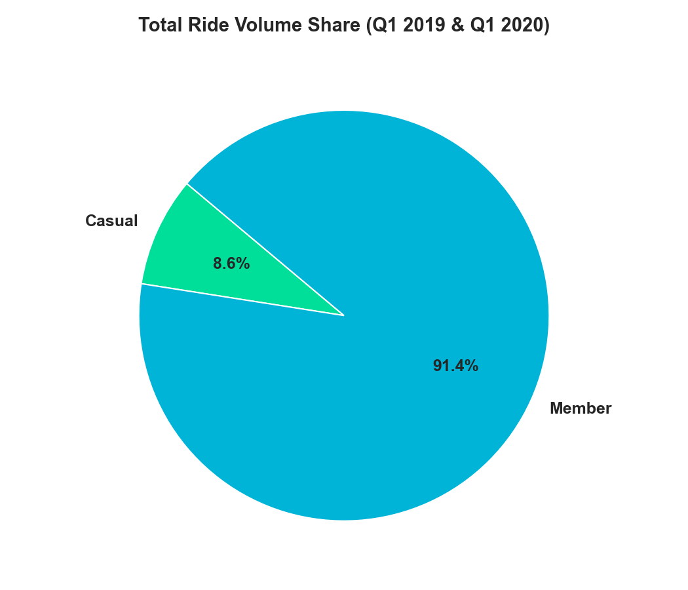
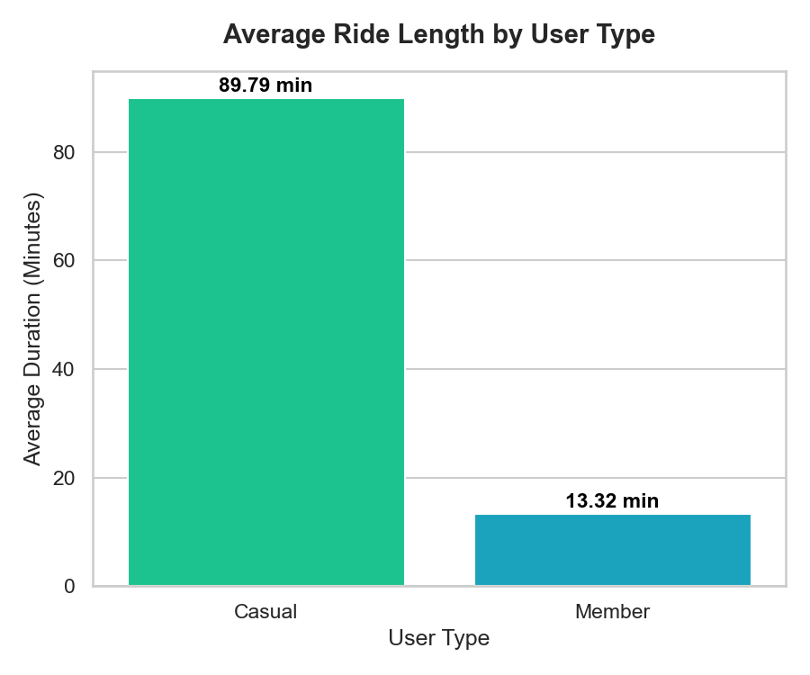
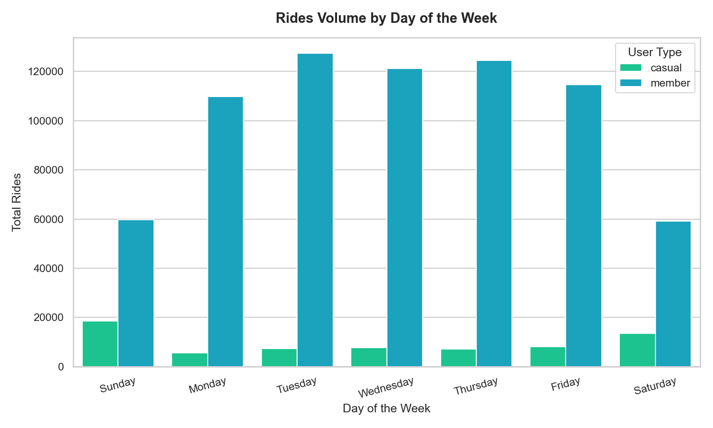
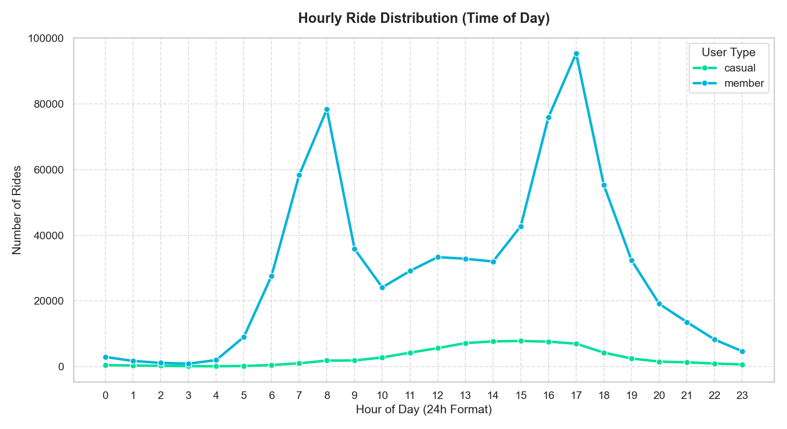
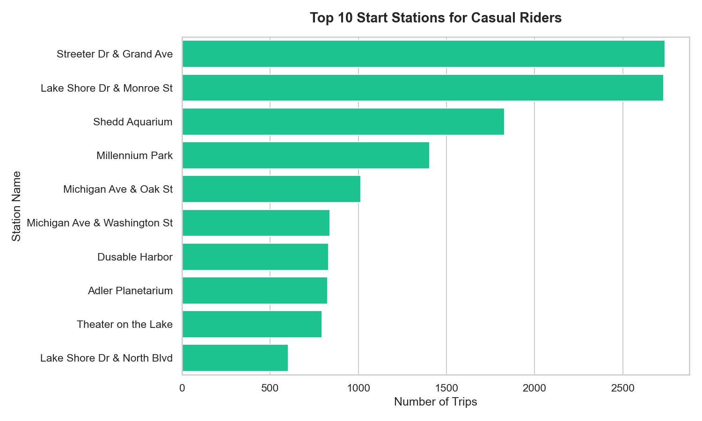
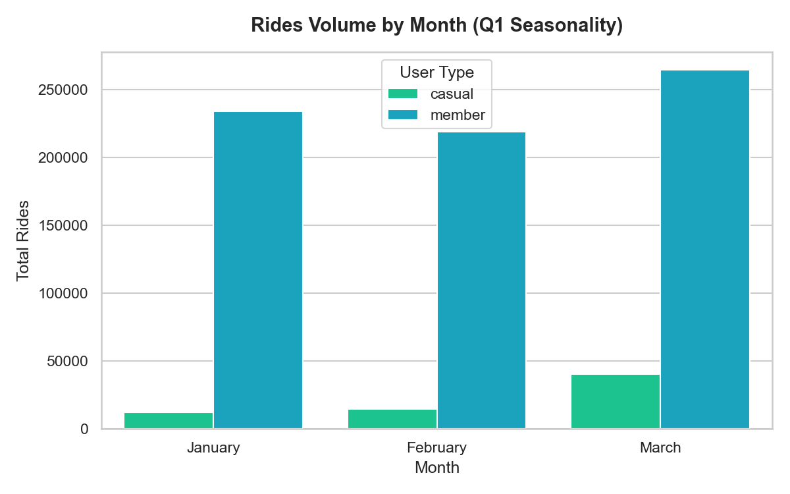

The Ask: Business Challenge
How do annual members and casual riders use Cyclistic bikes differently?
Cyclistic’s director of marketing, Lily Moreno, believes the company's future success depends on maximizing the number of annual memberships. Finance analysts have concluded that annual members are significantly more profitable than casual riders. Rather than targeting new customers, the marketing team aims to design strategies to convert existing casual riders into annual members.
Three Guiding Questions
- How do annual members and casual riders use Cyclistic bikes differently? Completed
- Why would casual riders buy Cyclistic annual memberships? Completed
- How can Cyclistic use digital media to influence casual riders to become members? Completed
Key Deliverables
- A clear statement of the business task
- A description of all data sources used
- Documentation of cleaning and manipulation
- A detailed summary of the analysis
- Supporting visualizations and findings
- Top three actionable recommendations
Business Task Statement
"Analyze Cyclistic's historical bike trip data to identify and understand the distinct behavioral patterns of annual members and casual riders. These data-driven insights will be utilized to formulate targeted marketing campaigns and product modifications designed to convert casual riders into high-value annual members."
Data Sources & Integrity
We analyzed historical trip data spanning **Q1 2019** and **Q1 2020** consisting of 784,285 cleaned trips. The data has been made available by Motivate International Inc. under an open data license.
| Dataset Name | Total Raw Rows | Cleaned Rows | Role in Analysis |
|---|---|---|---|
| Divvy_Trips_2019_Q1 | 365,069 | 365,069 | Baseline winter/spring usage patterns under the old schema. |
| Divvy_Trips_2020_Q1 | 426,887 | 419,216 | Recent usage trends under the standardized, modernized schema. |
Process: Data Cleaning & Standardizations
To prepare the datasets for a combined SQL analysis, we executed a Python cleaning pipeline performing the following actions:
Column Schema Standardization
Renamed all 2019 Q1 columns to match the 2020 Q1 naming convention (e.g. trip_id → ride_id, usertype → member_casual, start_time → started_at).
User Type Value Mapping
Mapped 2019's Subscriber value to member and Customer to casual to make user segments consistent across both quarters.
Calculated Fields Created
Calculated ride_length in seconds (ended_at minus started_at). Extracted day_of_week (Excel format: 1=Sunday, 7=Saturday), hour_of_day (0-23), and month.
Filtering & Outlier Removal
Filtered out 7,671 records from 2020 Q1 where ride_length was negative or less than 60 seconds (trips below 1 minute are commonly tests or dock errors).
Exploratory Data Analysis via SQL
We loaded the consolidated dataset into a SQLite database and queried it using SQL to isolate key behaviors.
SQL Query: Ride Volumes
SELECT member_casual, COUNT(*) FROM trips GROUP BY member_casual;
| User Type | Total Trips | Share (%) |
|---|---|---|
| Casual | 67,692 | 8.63% |
| Member | 716,593 | 91.37% |
SQL Query: Avg Duration
SELECT member_casual, AVG(ride_length)/60.0 FROM trips GROUP BY member_casual;
| User Type | Min Ride | Max Ride | Avg Duration |
|---|---|---|---|
| Casual | 1.02 min | 177,200 min | 89.79 min |
| Member | 1.00 min | 101,607 min | 13.32 min |
Top 5 Casual Start Stations
| Station Name | Trip Count |
|---|---|
| Streeter Dr & Grand Ave | 2,741 |
| Lake Shore Dr & Monroe St | 2,731 |
| Shedd Aquarium | 1,829 |
| Millennium Park | 1,404 |
| Michigan Ave & Oak St | 1,015 |
Top 5 Member Start Stations
| Station Name | Trip Count |
|---|---|
| Canal St & Adams St | 13,754 |
| Clinton St & Washington Blvd | 13,392 |
| Clinton St & Madison St | 12,838 |
| Kingsbury St & Kinzie St | 8,687 |
| Columbus Dr & Randolph St | 8,467 |
Query 8: Monthly Activity (Seasonality)
SELECT member_casual, month, COUNT(*), AVG(ride_length) FROM trips GROUP BY member_casual, month;
| User Type | Month | Total Rides | Avg Duration |
|---|---|---|---|
| Casual | January | 12,344 | 119.59 min |
| Casual | February | 14,907 | 135.87 min |
| Casual | March | 40,441 | 63.71 min |
| Member | January | 233,562 | 13.11 min |
| Member | February | 218,960 | 13.14 min |
| Member | March | 264,071 | 13.66 min |
Query 9: Trips Over 3 Hours (Outliers)
SELECT member_casual, COUNT(*) FROM trips WHERE ride_length > 10800 GROUP BY member_casual;
| User Type | Trips > 3 Hours | Share of User Rides (%) |
|---|---|---|
| Casual | 1,366 | 2.018% |
| Member | 767 | 0.107% |
Python Visualization Results (Seaborn / Matplotlib)
These static plots were generated in Python from our SQLite queries to visually demonstrate our core analytical findings.

Total Rides Distribution
Shows that annual members represent the overwhelming majority of rides in Q1 (~91.4%).

Average Ride Length
Highlighting that casual riders stay out significantly longer (89.8 mins) on average compared to members (13.3 mins).

Weekly Ride Volumes
Members peak during weekdays (commute routine), whereas casual riders ride mostly on weekends.

Hourly Ride Distribution
Members show clear peak commute spikes at 8 AM and 5 PM. Casual riders exhibit a single smooth curve peak in early afternoon.

Recreational Hotspots
Top stations for casual riders are clustered around tourist, park, and lakefront locations.

Q1 Seasonality Trends
Casual trips surge by 170% in March as spring begins, while member trips remain highly stable throughout the quarter.
Interactive Analytics Dashboard
Explore the data interactively using the Chart.js widgets below. Hover over datapoints to see precise values.
Trips by User Type
Average Ride Duration (Minutes)
Weekly Activity Patterns (Total Rides)
Hourly Activity Spikes (Commute Peaks vs. Leisure Curves)
Top 10 Casual Start Stations
Top 10 Member Start Stations
Monthly Activity Trends (Q1 Seasonality)
Act: Recommendations & Answers
Guiding the future marketing program of Cyclistic
We have synthesized our SQL analysis and visualizations to answer the three guiding questions assigned by Moreno.
Core Answers to Case Study Questions
Q1. How do annual members and casual riders use Cyclistic bikes differently?
Members: Use the system for commuting and utility. They show sharp spikes at 8 AM and 5 PM on weekdays. Their trip durations are short and highly consistent (average 13.3 mins), showing they travel directly from point A to B. Their volumes remain stable across months regardless of weather.
Casuals: Use the system for recreation, leisure, and fitness. Their usage peaks heavily on weekends (Saturday/Sunday) and during midday (12 PM - 3 PM). Their trip durations are extremely long (average 89.8 mins), and their volumes are highly weather-dependent, surging by 170% from February to March.
Q2. Why would casual riders buy Cyclistic annual memberships?
Cost Savings for Long Rides: Since casual riders take extremely long trips (averaging nearly 90 minutes, with 2% exceeding 3 hours), they accumulate substantial costs under a single-ride or day-pass pricing model. An annual membership provides unlimited 45-minute rides, offering massive financial savings for repeat users.
Spring/Summer Habitualization: As casual riders start riding frequently in March (averaging over 40,000 trips), showing them that a subscription lowers the cost of their daily/weekly exercise encourages conversion into a habit.
Q3. How can Cyclistic use digital media to influence casual riders to become members?
Geofenced Time-Targeted Ads: Serve mobile ads (Instagram/Facebook) near top recreational stations (*Streeter Dr & Grand Ave*, *Shedd Aquarium*, *Millennium Park*) on weekends between 10 AM and 4 PM when casual density is highest.
Triggered Email Cost-Comparisons: Utilize email data captured during single-pass purchases to send automated cost-summary reports showing: *"You rode for X hours last month and spent $Y. If you were an annual member, you would have spent only $Z!"*
Seasonal Promotion Campaign: Launch a digital "Spring Into Gear" campaign in early March (matching the casual ridership surge) highlighting the health, community, and economic benefits of annual memberships.
Top 3 Actionable Recommendations for Lily Moreno
Targeted On-Station & Geofenced Digital Ads
Deploy interactive digital kiosk ads and QR codes at the top 10 casual start stations (*Streeter Dr & Grand Ave*, *Lake Shore Dr & Monroe St*, *Shedd Aquarium*). Pair this with hyper-local geofenced ads on social media targeting casual riders physically unlocking bikes at these recreational hotspots during weekend afternoon peaks.
Personalized "Cost-Benefit" Email Campaigns
Highly EffectiveLeverage single-pass transactional data to trigger automated email campaigns for casual riders who have ridden more than 3 times in a month or had a single ride exceeding 60 minutes. Provide a visual cost comparison breakdown showing how much they would save by upgrading to an annual membership, with an easy one-click upgrade button.
Introduce a "Weekend Warrior" or "Seasonal" Pass
Since casuals use the system heavily for weekend leisure, design a "Weekend Warrior Pass" (unlimited weekend rides) or a "Summer Season Pass" as transitional subscription tiers. These passes gather recurring billing details and customer emails, acting as high-conversion pipelines to upsell to full annual memberships.